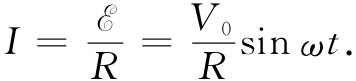
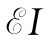
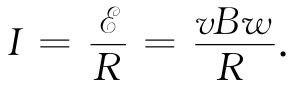
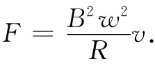
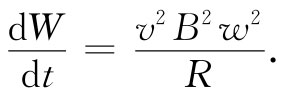

=vBw. （17.19）
=vBw. （17.19）在本章的其余部分，我们将应用§17-1中的原理来分析第16章中曾讨论过的若干现象。我们首先要对交流发电机更详细地加以审察。这种发电机基本上由一个在匀强磁场中转动的导电线圈构成。相同的结果也可用磁场中的固定线圈来获得，而磁场的方向按上一章所描述的方法旋转。我们将仅仅考虑前一种情况。假设有一个圆形线圈能够以它的一根直径为轴而旋转。让这个线圈安放在一个垂直于该转轴的匀强磁场之中，如图17-6所示。我们并且设想该线圈两端通过某种滑动触点被引至外电路。
图17-6 一个导电线圈在匀强磁场中旋转——交流发电机的基本原理
由于线圈转动，穿过它的磁通量便将发生改变。因此，在线圈的电路中就有一个电动势。令S为该线圈的面积 [1] ，而θ为磁场与线圈平面法线之间的夹角。于是穿过线圈的磁通量就是
BScosθ. （17.13）
如果线圈以匀角速度ω旋转，则θ随时间变化为θ=ωt。
线圈中每匝的电动势都等于该通量的变化率。若线圈有N匝，则总电动势就大N倍，所以
如果把来自发电机的导线引导至离转动线圈相当远的地方，那里的磁场为零，或至少磁场已不随时间变化，那么在这个区域里E的旋度将为零，因而我们可以定义一个电势。事实上，若没有电流从发电机中引出，则两根导线间的电势差V将等于该旋转线圈中的电动势。这就是说，
V=BSωsinωt=V0 sinωt.
两根导线间的电势差随sinωt变化。这样变化的电势差称为交变电压。
既然两根导线之间存在电场，那么它们就必然是带电的。显然，发电机的电动势已经把某些超额电荷推出至导线上，直到这些电荷产生的电场强大到足以抵消该感应力时为止。从发电机的外面看，两根导线表现出似乎像在静电场中那样，被充电至电势差V，而电荷又似乎是随时间变化的，因而给出一个交变电势差。与静电情况还有另一个不同。如果把发电机与一个容许电流通过的外电路连接，则我们将发现该电动势并不允许导线放电，而是当电流从导线引出来时继续对导线供应电荷，企图使两导线之间永远保持一个不变的电势差。事实上，若发电机与一总电阻为R的电路连接，则流经该电路的电流将与发电机的电动势成正比与R成反比。由于电动势具有正弦形式的时间变化，所以电流也是一样。即有一个交变电流：

关于这一种电路的原理图如图17-7所示。
图17-7 包含一部交流发电机和一个电阻的电路
我们也能看到，电动势确定了发电机供应能量的多少。导线中的每个电荷都以F·v的功率接受能量，其中F为作用于该电荷上的力，而v为电荷的速度。现在设单位长度导线中的运动电荷数目为n，则对导线的任意线元ds所供应的功率为
F·vnds.
对于一条导线来说，v总是沿着ds，所以这功率可以写成
nvF·ds.
对整个电路提供的总功率等于这一表式环绕整个回路的积分：
功率=∮nvF·ds. （17.15）
现在应当记得，qnv就是电流I，而电动势则被定义为F/q环绕该电路的积分。因此就得到这么一个结果：
发电机提供的功率= . （17.16）
当发电机的线圈中有电流通过时，也将会有机械力作用于其上。事实上我们知道，作用于线圈上的力矩与它的磁矩、磁场强度B以及它们间夹角的正弦成正比，磁矩等于线圈中的电流乘以线圈面积，因此该力矩为
τ=NISBsinθ. （17.17）
为维持线圈转动必须做机械功，其功率等于角速度ω乘以力矩：
把上式和式（17.14）比较，可见为了转动线圈而抵抗磁力所需的机械功率恰好等于 ，即发电机的电动势所输送出来的电能的功率。在发电机中用掉的全部机械能表现为电路上的电能。
作为由于感生电动势而产生的电流和力的另一个例子，让我们分析在§17-1中曾描述过、如图17-1所示的设备中发生的事情。那里有两根平行导线和一根滑动横杆放置在一个垂直于该平行导线平面的磁场中。现在让我们假定该U形“底”部（图中的左端）是由高电阻导线制成，而那两根侧线由像铜一样的良导体制成——于是我们就不必担心当横杆移动时电路的电阻会发生改变。和以前一样，电路的电动势为
=vBw. （17.19）
电路中的电流与这个电动势成正比而与电路的电阻成反比：
 （17.20）
由于这个电流，所以就会有作用于横杆上的磁力，这力与杆的长度、杆中的电流以及磁场均成正比，即
F=BIw. （17.21）
由式（17.20）取I，因而对于力便有
 （17.22）
我们看到，力与横杆的速度成正比。正如你可以很容易就明白，这个力的方向与杆的移动速度相反。这种像黏力那样与“速度正比”的力，每当在磁场中移动导体而产生感生电流时总会出现。在上一章中我们所举的有关涡流的例子，也会产生作用在导体上、与导体速度成正比的力，尽管一般来说，这样的情况都会给出难以进行分析的复杂电流分布。
在机械系统的设计中，要得到与速度成正比的阻尼力往往是方便的。涡流力提供一个获得这种与速度有关的力的最方便办法。应用这种力的一个例子就是普通的家用电表。在电表中有一个旋转于永磁铁两极间的薄铝盘。这个盘由一个小电动机驱动，其力矩与家庭电路中所消耗的功率成正比。鉴于在盘中的这个涡流力，便会有一个正比于速度的阻力，当平衡时该速度与电能消耗的速率成正比。利用一个连接于转盘上的计数器，就把它的转数记录下来了。这个数目就是总能量消耗、亦即所用去的瓦时数的指示。
我们也可以指出，式（17.22）表明来自感生电流的力——也就是任何涡旋电流的力——均与电阻成反比。材料的导电性能越好，这力就越大。当然原因在于电阻低，电动势所产生的电流就更强，而较强的电流表示较大的机械力。
从那些公式我们也可以看出，机械能是如何转变成电能的。如前所述，对电路中电阻所提供的电能为积 。当移动导电横杆时对其所做的功率，为杆受到的作用力乘以杆的速度。利用关于力的式（17.22）后，所做的功率为

我们看到，这确实等于由式（17.19）和（17.20）所该获得的积 。机械功再次表现为电能。